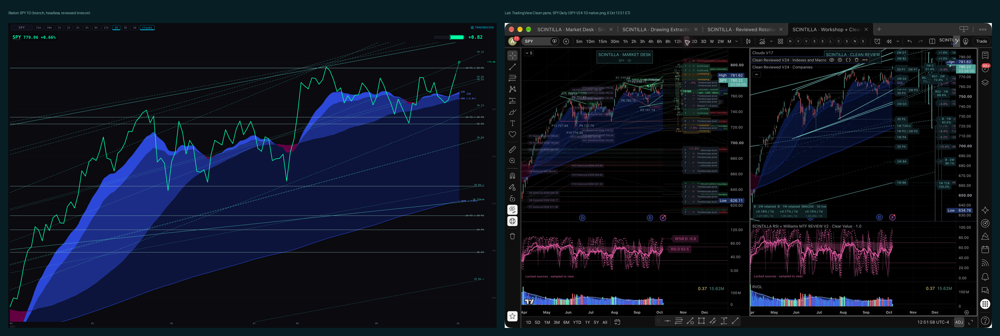
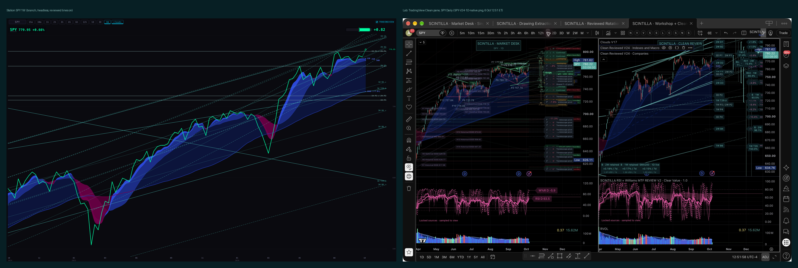
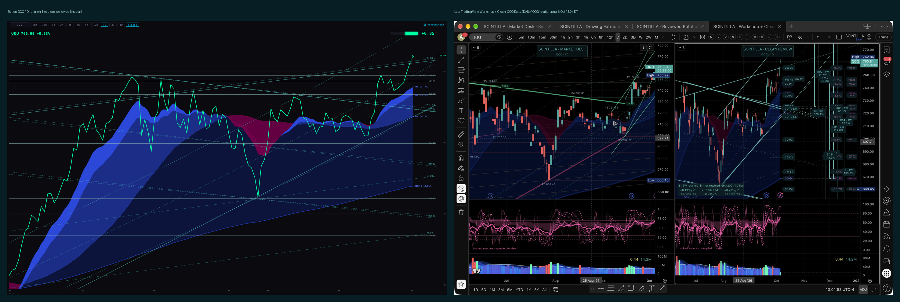
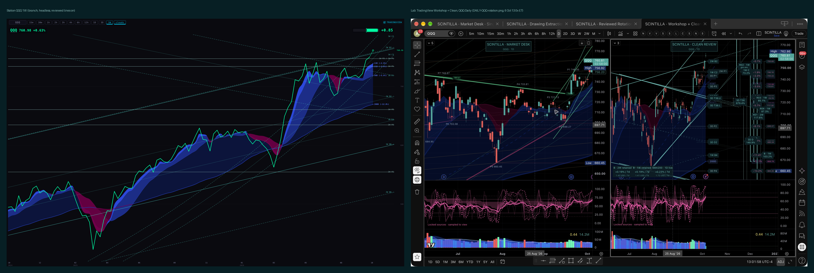
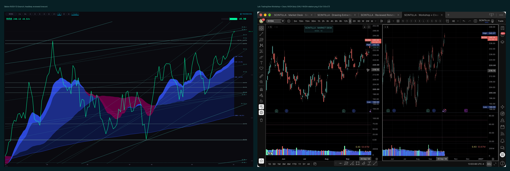
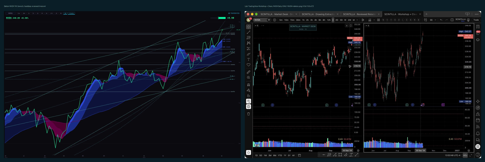
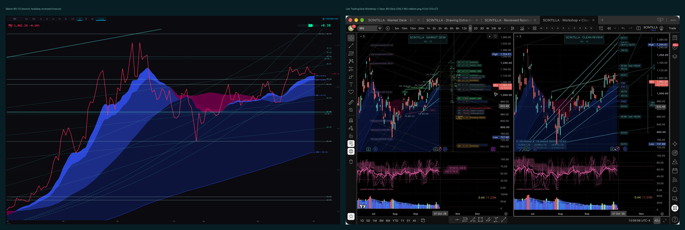
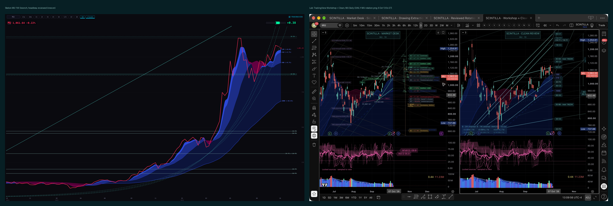

Alan asked for the lines he approved in the Indicator Lab's Clean Review to come into Scintilla the way the clouds did. This page shows the first pass: every retained line of the 19 reviewed names read out of the Lab's installed packs, drawn thin on the Station chart, and read by a small "where does price sit" step. Nothing here is live. It is a branch, a dry run and pictures. The Lab still owns every line.
Left: our chart on the branch, headless, 1680 wide, reviewed lines on. Right: the Lab's saved screenshot of the same name on its Daily review (its Clean pane is the right half of that picture). Same lines, same colours; ours are thinner and labelled at the right edge with their source timeframe.








Also in pictures/: SPY-1D-reviewed-off.png (the switch off: no lines) and SPY-1D-phone.png (390 wide).
For each name: the nearest approved line above and below the price, how far away in percent, and what price has done against the lower one in the last 10 sessions. SPY's 2W P1 at 777.44 and QQQ's at 747.05 are the two Alan named; both appear.
| name | price | nearest above | level | % | nearest below | level | % | state (vs nearest below) |
|---|---|---|---|---|---|---|---|---|
| SPY | 780.21 | 1W B2 (approved slope) | 788.34 | +1.04 | 1W C2 | 779.24 | −0.12 | retest from below |
| QQQ | 761.30 | 1W C1 | 776.95 | +2.06 | 1W B2 (approved slope) | 755.65 | −0.74 | broke above 1 session ago |
| NVDA | 240.13 | 2W D3 | 241.95 | +0.76 | 1W B2 (approved slope) | 240.10 | −0.01 | retest from below |
| AVGO | 379.49 | 3D P3 | 383.63 | +1.09 | 2W T6.L | 369.34 | −2.67 | retest from below |
| GOOGL | 348.16 | 3D D1 | 358.88 | +3.08 | 3D D2 | 337.98 | −2.92 | broke above 8 sessions ago |
| AMZN | 256.01 | 3D B4 | 257.03 | +0.40 | 1W B4 (approved slope) | 253.63 | −0.93 | broke below 9 sessions ago |
| MU | 1065.43 | 3D D1 | 1097.01 | +2.96 | 3D P1 | 1036.13 | −2.75 | retest from above (resistance turned support) |
| NBIS | 253.59 | 1W D1 | 265.17 | +4.57 | 1W P4 | 233.73 | −7.83 | broke below 1 session ago |
| BE | 300.22 | 2W D3 | 303.85 | +1.21 | 3D C2 | 294.76 | −1.82 | retest from below |
| VST | 159.90 | 2W D1 | 165.13 | +3.27 | 1W P1 | 154.65 | −3.29 | below |
| WMT | 106.67 | 3D P4 | 106.99 | +0.31 | 1W D2 | 104.92 | −1.64 | broke above 1 session ago |
| CRWV | 92.55 | 3D P1 | 93.90 | +1.46 | 1W C3 | 87.37 | −5.59 | broke above 3 sessions ago |
| BTCUSD | 85778.54 | 1W C1 | 86864.97 | +1.27 | 1W C2 | 83630.02 | −2.50 | broke above 5 sessions ago |
| GCUSD (gold, futures basis) | 4167.40 | 1W D2 | 4212.19 | +1.07 | 1W C2 | 4158.71 | −0.21 | retest from above |
| SIUSD (silver, futures basis) | 61.30 | 1W C2 | 62.61 | +2.14 | 3D P5 | 61.01 | −0.48 | broke above 1 session ago |
| CLUSD (oil, futures basis) | 89.43 | 3D P3 | 93.50 | +4.55 | 2W D3 | 88.63 | −0.90 | retest from above |
| US10Y | 5.263 | 1W B2 | 5.349 | +1.63 | 1W D1 | 5.236 | −0.52 | broke above 6 sessions ago |
| VIX | 15.09 | 2W P1 | 15.18 | +0.60 | 1W P2 | 13.80 | −8.55 | above |
| PCC | 0.830 | 1W D2 | 0.835 | +0.58 | 1W C2 | 0.825 | −0.60 | broke above 1 session ago |
SPY P1: 1W P1 / 2W P1 = 777.44, price 0.36% above, retesting it from above after breaking it today. QQQ P1: 1W P3 / 2W P1 = 747.05, price 1.9% above, broke above two sessions ago.
Both V24 pack files match the hashes pinned in the Lab's manifest. 647 pack rows decode to 486 retained lines (186 horizontal pivots, 76 straight rails, 195 logarithmic rails and 29 fitted pattern rails such as SPY's weekly T29), 89 bracket pairs and 72 slope-strip rows. The 6 Oct Daily selections are listed separately: 41 items, geometry pending. Every line carries its record hash, the pack file and hash, the evidence file and hash, and the Lab's approval flags exactly as recorded; 51 lines carry an approved slope and 0 carry an attention-range approval (the SPY/QQQ attention ranges are plot formulas, recorded verbatim, not lines).
The Clean pane was on QQQ at 2W when read (over the debug port, read-only, nothing touched). The pane drew 121 primitives: 17 sloped strokes, 9 pivot lines, 46 level guides, 19 dotted continuations, 10 bracket verticals and 20 label ticks. All 24 drawn levels that can be compared match our extract exactly (to one part in a million). The two sloped strokes not compared are the T36 fitted rails, which the pane evaluates at its own live time. Three of our 26 QQQ levels are not drawn as separate lines because the pack draws exactly-equal geometry once (2W B2 = 1W B2 at 755.65; 3D P3 = 1W P1 at 733.81; 3D P4 = 1W P2 at 660.45). The other 18 names were not checked on the pane, because that would mean changing its symbol.
Provider branch provider/lb1-reviewed-lines-20261006: scripts/reviewed-lines-extract.mjs (the extractor), services/reviewed-lines/ (decoder, rows, where), migrations/0026_reviewed_lines.sql + rollback, scripts/reviewed-lines-load.mjs --dry-run, scripts/reviewed-lines-where.mjs, scripts/reviewed-lines-parity.mjs, tests in tests/reviewed-lines.test.mjs, outputs in evidence/lb1-reviewed-lines-20261006/. Station branch station/lb1-reviewed-lines-20261006: _indicators/station-reviewed-lines.js (pure geometry), _indicators/reviewed-lines-extract.json (copy of the extract), the hook in both chart copies (?reviewed=0 turns it off; a line shows when its source timeframe is at or above the chart's), this page and its harness. Lab folder and TradingView read only. Colours: the Lab's PIVOT #8FBEBB for horizontals, INK #51CFC4 for rails.